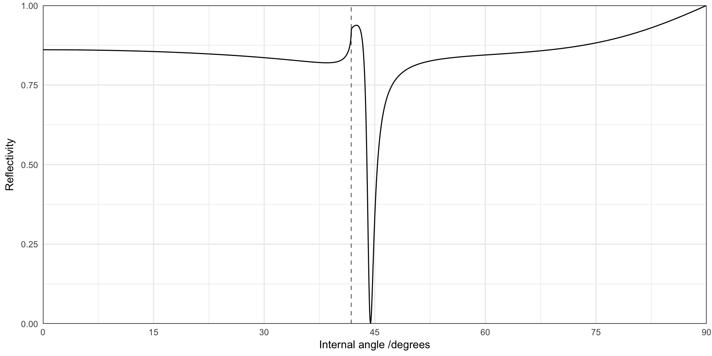
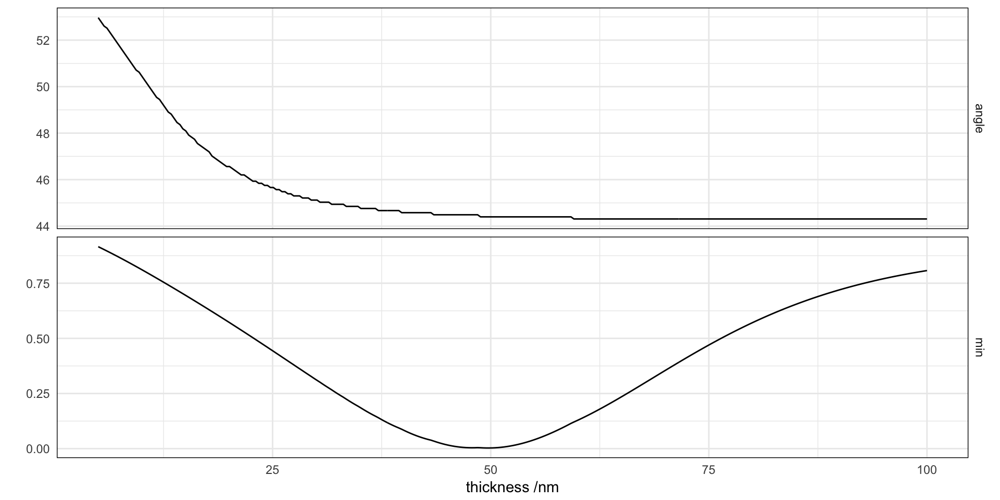

Surface plasmon-polaritons in the Kretschmann configuration
baptiste Auguié
24 February, 2017
The Kretschmann configuration consists of a thin metal film, typically 50nm of gold or silver, deposited on top of a high-index prism (n=1.5 for glass). Light incident from the prism side undergoes total internal reflection (TIR) above ~45 degrees (internal angle). The evanescent field associated with TIR penetrates the metal and may couple to surface plasmon-polaritons supported at the air/metal interface.
Here we model the optical properties of such a system, starting with the angular variation of the reflectivity.
Reflectivity against internal incident angle for the Kretschmann configuration, at fixed wavelength
Modelling the reflectivity
wvl <- 632.8
gold <- epsAu(wvl)
results <- recursive_fresnelcpp(epsilon = list(1.5^2, gold$epsilon, 1), wavelength = gold$wavelength,
thickness = c(0, 50, 0), angle = seq(0, pi/2, length = 2000), polarisation = "p")
str(results)## List of 9
## $ wavelength : num 633
## $ k0 : num 0.00993
## $ angle : num [1:2000] 0 0.000786 0.001572 0.002357 0.003143 ...
## $ q : num [1:2000] 0 0.000786 0.001572 0.002357 0.003143 ...
## $ reflection : cplx [1:2000] -0.599-0.709i -0.599-0.709i -0.599-0.709i ...
## $ transmission: cplx [1:2000] 0.142-0.122i 0.142-0.122i 0.142-0.122i ...
## $ R : num [1:2000] 0.861 0.861 0.861 0.861 0.861 ...
## $ T : num [1, 1:2000] 0.0524 0.0524 0.0524 0.0524 0.0524 ...
## $ A : num [1, 1:2000] 0.0868 0.0868 0.0868 0.0868 0.0868 ...Plotting the results
m <- data.frame(results[c("angle", "R")])
tir <- asin(1/1.5) * 180/pi
ggplot(m) + geom_vline(aes(xintercept = x), data = data.frame(x = tir), linetype = 2,
color = "grey50") + geom_line(aes(angle * 180/pi, R)) + scale_y_continuous("Reflectivity",
expand = c(0, 0), limits = c(0, 1)) + scale_x_continuous("Internal angle /degrees",
expand = c(0, 0), breaks = seq(0, 90, by = 15))
Variation of the parameters, and effect on the resonance
We now look at the effect of changing the thickness of the metal layer, from non-existent (single air/glass interface), to an opaque metal film. First, we wrap the calculation in a function, and loop over this function with a vector of film thicknesses.
simulation <- function(thickness = 50) {
results <- recursive_fresnelcpp(epsilon = list(1.5^2, gold$epsilon, 1^2),
wavelength = gold$wavelength, thickness = c(0, thickness, 0), angle = pi/180 *
seq(15, 60, length = 500), polarisation = "p")
data.frame(results[c("angle", "R")])
}
## loop over parameters
parameters <- function(res = 10) data.frame(thickness = seq(0, 100, length = res))
d1 <- mdply(parameters(10), simulation)
d2 <- mdply(parameters(300), simulation)
p1 <- ggplot(d1) + geom_line(aes(angle * 180/pi, R, colour = thickness, group = thickness)) +
scale_y_continuous("Reflectivity", expand = c(0, 0), limits = c(0, 1)) +
scale_x_continuous("Internal angle /degrees", expand = c(0, 0), breaks = seq(0,
90, by = 15)) + guides(colour = guide_legend())
## colour map
p2 <- ggplot(d2) + geom_raster(aes(angle * 180/pi, thickness, fill = R)) + scale_y_continuous("thickness",
expand = c(0, 0)) + scale_x_continuous("Internal angle /degrees", expand = c(0,
0), breaks = seq(0, 90, by = 15))
grid.arrange(p1, p2, nrow = 2)
minimum <- ddply(subset(d2, angle > tir * pi/180 & thickness > 5), .(thickness),
summarize, angle = angle[which.min(R)] * 180/pi, min = min(R))
ggplot(melt(minimum, id = "thickness")) + facet_grid(variable ~ ., scales = "free") +
geom_line(aes(thickness, value)) + labs(y = "", x = "thickness /nm")